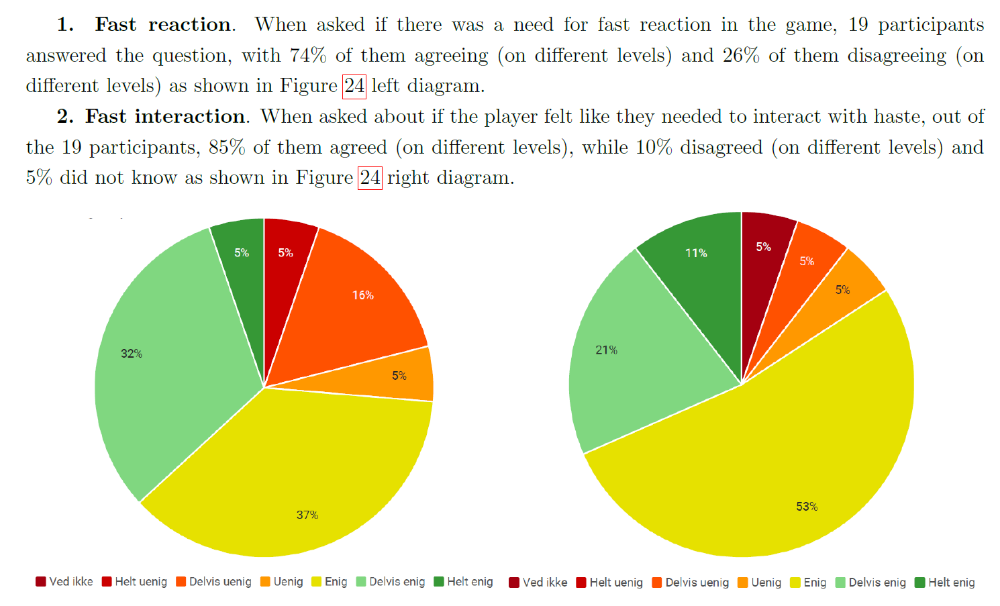

Development of a Dynamic Challenge Adjustment
Using Q-learning to provide game challenges in a Tower-Defense
Disposition
- Presentation and game sample
- Project purpose
- Results
- Thoughts and realization
- Perspective
The Last Stand
Tower-Defense game with shooter elements
Dynamic Challenge Adjustment
Powered by Reinforcement Learning: Q-Learning
The goal
To explore the possibilities of a Dynamic Challenge Adjustment (DCA) algorithm
Like what?
Like delivering unique game experiences
How?
Game balancing
Procedural content generation
By what means?
By identifying the player's skill set through challenge

Did I succeed in doing so?
... yes and no
Succeeded
In exploring the different opportunities in game balancing via challenges and creating a design centered around challenges
Failed
In scientifically proving that there is a benificial effect of implementing a DCA
... and there is many reasons why.
Project flaws
- Contradicting goals
- TD framework, but hybrid challenges
- CORGIS* were only used on variance group
- Challenge Originating from Recent Gameplay Interaction Scale
- Cognitive challenges
Contradicting goals
- To place the player in flow
- To let the player progress a far as possible
TD framework, but hybrid challenges
Game was build as a TD, but the challenges were designed for more than just TD

CORGIS were only used on variance group

Cogntive challenges
Game were designed to faciliate performative and cognitive challenges
... but only performative challenges were used and evaluated
Realization
Things I've realised later on...
Skill and challenge as signatures
It's easy to imagine painting a picture of a certain playstyle
... But imagine having as a challenge indicator aswell
AI and semantics
Can an AI understand the semantics of something challenging?
AI and humanity
HumaneAI (Crowley, J. et al. , 2019)
Human Centric AI - human-machine interaction, cognitive science and social sciences
A good game experience?
If everything went right, would it guarantee a good game experience?
Would players progress an almost infinite of waves?
Double-Track System
Fine-grained sentiment classification (Hong X. et al., 2021)